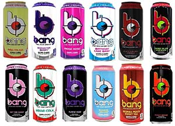
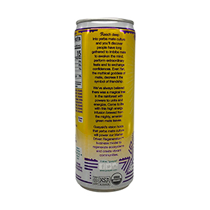
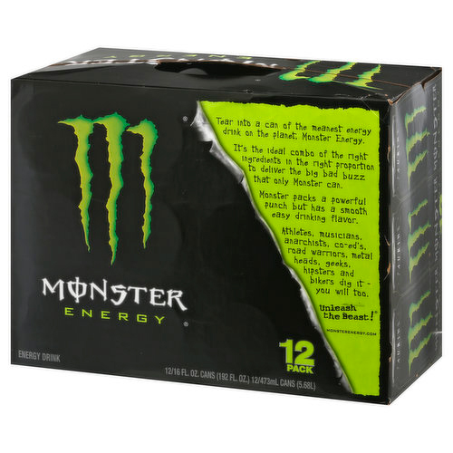
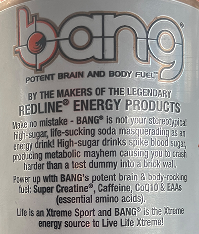

Energy drinks and their packaging are found on the shelves of convenience stores and supermarkets. They are easily accessible and sometimes part of someone’s daily routine. People drink energy drinks for multiple reasons: they like the taste, need a booster to finish an assignment they procrastinated on, or buy it because they were drawn to the packaging. The third reason I listed is precisely why I am doing my project on this topic. Packaging design is crucial to any company, as it is part of what gets consumers to buy their products.
This genre addresses the effectiveness of marketing. The bright colors, bold font choices, and text on the cans all contribute to consumers' likeliness of picking a certain brand of energy drink over others on the shelves.
WHEN IS IT USED?
This genre is used for branding and marketing energy drinks. The market is overflowing with energy drink brands, and the way they decide to brand their drink helps certain companies stand out from others. The goal is to entice audiences to buy the product. More products bought equals more revenue. All of these marketing tactics are a result of capitalism.
WHY IS BRANDING IMPORTANT?
Branding is pivotal to marketing for a company. The brand identity is how consumers' recall a product and establishes itself in the market. The elements of graphics, color, font choice, and written content all contribute to its uniqueness. I specifically zoned in on energy drink branding because it has a quality that is different from other types of drinks (soft, sparkling, water etc,.).
WHO IS IT FOR?
The people that associate with this genre would usually be teens to mid-20s. Younger children should stay away from caffeine, so they are not included in the range. The older generation isn’t too keen on sugary substances, and usually goes for coffee when they want to ingest caffeine products. One study revealed that the amount of caffeine being consumed was 227 milligrams per day among young adults ages 20 through 39, compared to their non-consumer counterparts, who only consumed about 52.1 milligrams of caffeine per day. (justfunfacts.com, 2021)
CONTENT
Logo Design
In this new age of modernity, many brands seem to benefit from simplistic and sleek designs, but energy drinks stray away from this concept.
Red Bull Logo, 1987
A great example to analyze is the infamous Red Bull logo, the striking red and yellow logo has established itself as one of the most popular energy drinks on the market. Instead of being minimalistic, the eccentric graphic design is what makes the brand relevant and stand out amongst its competitors. The Red Bull logo also customized its font, making it uniquely theirs. This can be seen by the letters "R" and "B". The logo may not be classy and dainty, but it is bold and powerful, which is exactly the type of messaging energy drinks make an effort to exhibit.
Graphics
Funky graphics and bold color choices are a staple to most energy drink brands. Bang Energy Drink is the perfect example to use in terms of graphics.
 Bang Energy Drink, 2012
Bang energy drink has a different color palette for every flavor they produce, as seen in the graphic above. Smashbrand.com points out that Bang Energy "adopted the concept of taking adult drink packaging and evoking memories from our childhood." This is seen through the playful use of color. The combinations are quite contrasting, like the red and green or the blue and pink. The dichotomy gives it a sense of childlike wonderment.
Messaging
The type of content on energy drink cans usually include nutritional facts, dietary/health warnings, and a couple short paragraphs that talk about the drinks’ mission. I will use Guayaki Yerba Mate as an example for messaging in terms of a mission statement.
 Guayaki Yerba Mate, 1996
Guayaki Yerba Mate's motto is their belief that yerba mate culture is an invitation to life on a personal, social, ecological and cultural scale. Quoting straight from the paragraph on their can, they state that the company business model strives to "generate ecosystems and create vibrant communities". Their tactic is obvious, appealing to the ethos of an individual. Climate change and sustainability is a huge issue in our world at the moment. Their messaging conveys a sense of recognition of environmental issues, which makes the consumer feel as if they are helping by proxy if they support the company.
WRITING CONVENTIONS
The usual tone of energy drink branding writing conventions is casual. The messaging I mentioned earlier from Guayaki Yerba Mate is an outlier. Their more formal tone is due to the fact that they want to convey a sense of responsibility. For this portion, I will focus on Monster Energy and Bang Energy.
 Monster Energy, 2002
The text is written in a way that sounds like the brand is inviting you into their community, by outlining the reasons they believe their drink is something valuable for the customer. This persuasion tactic appeals to the pathos of people. The format of the text is short paragraphs. The reading is not too long as to bore the viewer, but enough for them to retain a good amount of information on the brand’s mission. The sentences used are simple, they use common language to appeal to its base audience of young teens and young adults. The diction is exciting with phrases like " big bad buzz" and "powerful punch". These words are easy to associate with high energy, which is exactly why buyers want to consume the product in the first place.
 Bang Energy Drink, 2012
Unlike Monster, Bang Energy goes an extra step to speak on why they believe their brand is better than the others. But similarly to Monster Energy, Bang Energy also plays off of hardhitting diction with phrases such as "potent brain & body rocking fuel".
It is evident that energy drinks love to hype up their consumers through their friendly and playful tone. There is also a humorous aspect that these brands like to include. Monster calls to "anarchists" and "musicians " enjoying their drink. The contrast between these groups of people is quite funny and odd. Bang Energy stating that their drink will not cause you to "crash harder than a test dummy into a brick wall" is a comical scenario to imagine.